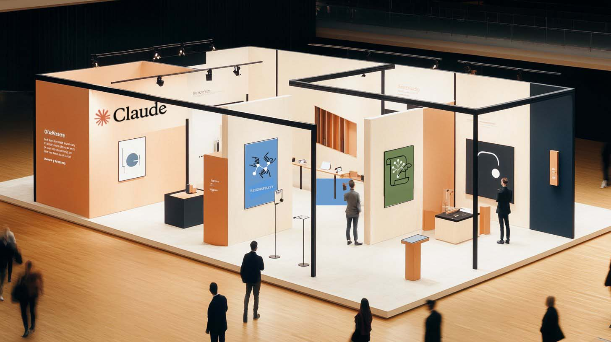
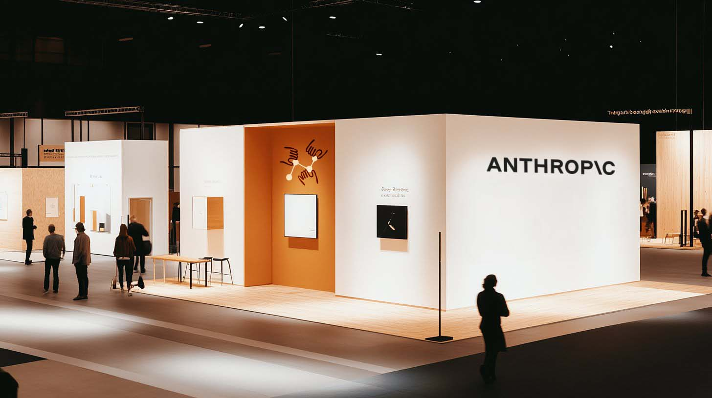
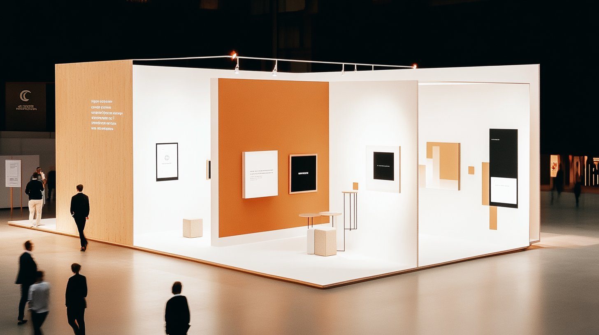
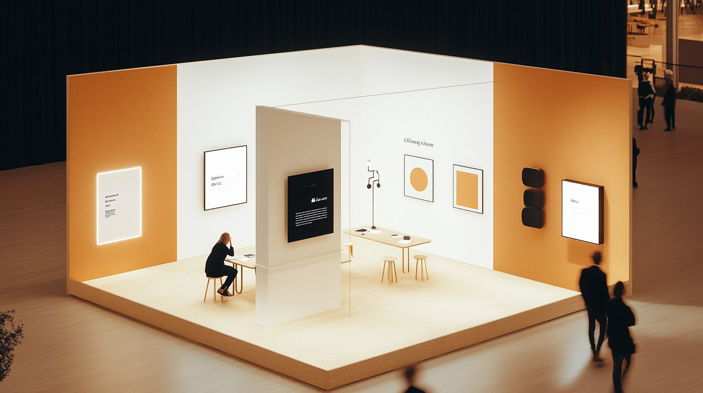
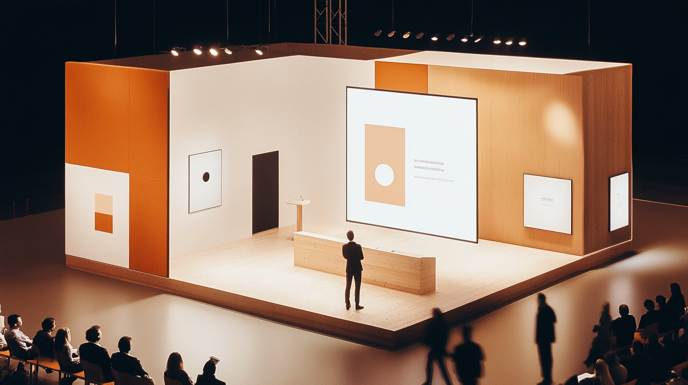
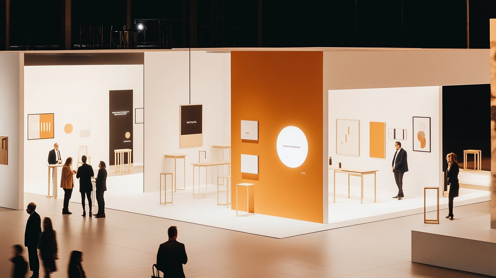
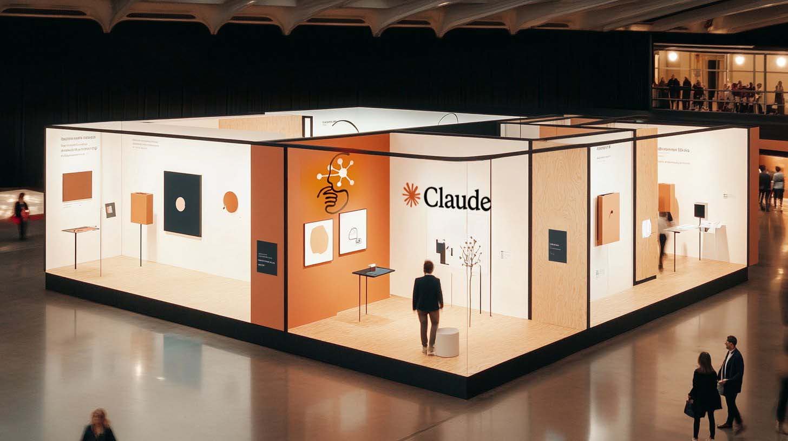

How might Anthropic show up at a conference — not to sell, but to invite a different kind of conversation about AI? A speculative event concept exploring spatial design, brand experience, and the attendee journey.
Most conference booths compete on volume — bigger screens, louder graphics, more aggressive lead capture. The result is a floor of undifferentiated noise where every company looks the same.
Anthropic is different. Their brand is built on restraint, intellectual honesty, and a belief that AI should be safe and beneficial. Their visual identity reflects this: warm, muted, typographic, unhurried. The brief I set for myself was simple — design a conference presence that feels like Anthropic, not like a trade show.
The concept: a space that rewards curiosity over conversion. An environment where attendees slow down, engage with ideas, and leave with a lasting impression of a company that thinks differently about AI.
Use restraint as a competitive advantage. While competitors fill every surface with messaging, create negative space that draws people in. The quietest booth on the floor becomes the most magnetic.
Frame the experience more like visiting an exhibition than attending a sales pitch. Encourage exploration and discovery rather than a linear sales funnel. Let people find their own path.
Use real materials — oak, linen, concrete, felt — that you can touch. In a sea of printed vinyl and aluminum extrusion, natural materials communicate craft and intentionality without saying a word.
Instead of hiding infrastructure, let the construction be part of the design language. Exposed steel frames, visible joinery, and honest structure echo Anthropic's commitment to transparency.

The first moment matters most. From the conference floor, the booth reads as a calm, warm volume — a deliberate contrast to the visual noise surrounding it. Dark exterior walls with natural wood panels create a clear boundary between "out there" and "in here."
There's no aggressive signage pulling you in. Instead, multiple open entry points invite curiosity. A large typographic statement on the exterior wall offers a thought rather than a tagline — something worth pausing for before stepping inside.

Once inside, the first thing you encounter isn't a product demo or a sales rep — it's a curated wall of ideas. Large-format typographic panels present Anthropic's thinking on AI safety, alignment, and responsible development. Not marketing copy. Actual ideas, presented with the care of a gallery exhibition.
The wall uses a modular panel system that can be reconfigured for different events and updated as Anthropic's research evolves. Each panel pairs a provocative question with a concise point of view — designed to be read in under 30 seconds but thought about long after.

The hands-on zone, but designed to feel like a workshop rather than a kiosk. Small oak tables seat two or three people at a time — intimate enough for a real conversation, not a scripted demo. A central divider wall anchors the space with a screen showing Claude in action.
The key design decision: no standing demo stations with screens on poles. Instead, the interaction happens at seated height, at conversation speed. Attendees sit alongside an Anthropic team member rather than across from them. The spatial arrangement says "let's explore this together" rather than "let me show you what this does."

A semi-enclosed space for 20–30 seated attendees, designed for short talks and fireside conversations. Wooden bench seating reinforces the informal, intellectual tone. The stage itself is barely elevated — a low platform that puts the speaker at eye level with the front row.
The backdrop is a single large projection surface with generous margins. Presentation slides follow the same typographic restraint as the rest of the space — no bullet points, no stock photography, just well-set type and the occasional diagram. The architecture of the stage area uses taller wall panels to create acoustic separation from the main floor without fully enclosing the space.

The final zone is intentionally quiet — a place to sit, process, and have an unstructured conversation. Low seating with natural linen upholstery. Small side tables with printed booklets and research summaries. A few plants. No screens.
This is the zone most conference booths forget: the moment after the demo, after the talk, when someone decides whether this company is worth following up with. By giving attendees a comfortable place to decompress within the Anthropic space, the brand gets the most valuable thing at a conference — extended dwell time and authentic conversation.


Tables, benches, signage panels, and trim. Quarter-sawn for tight grain. Finished with a matte clear coat to preserve natural warmth without sheen.
Seating upholstery and scrim panels. Unbleached, medium-weight. Creates soft acoustic dampening and tactile warmth throughout the space.
Flooring base. Sealed and polished to a matte finish. Provides a grounding material that contrasts with the warmth of wood and textile above.
Structural frame, shelf brackets, and lighting track. Powder-coated to a flat finish. Provides graphic contrast and industrial honesty.
Accent walls and wayfinding surfaces. A warm, earthy tone that anchors the palette and provides contrast against off-white walls without competing for attention.
Acoustic panels and pinboard surfaces. Charcoal and warm gray tones. Functional sound dampening that doubles as a refined graphic texture.
This concept started with a question: what does it look like when a brand's physical presence actually reflects its values? For Anthropic — a company built on safety, thoughtfulness, and doing things carefully — the answer isn't louder. It's more intentional.
Every material, every spatial decision, every moment in the attendee journey was designed to communicate one thing: this is a company that thinks before it acts. And that kind of restraint, in a conference hall full of noise, is impossible to ignore.